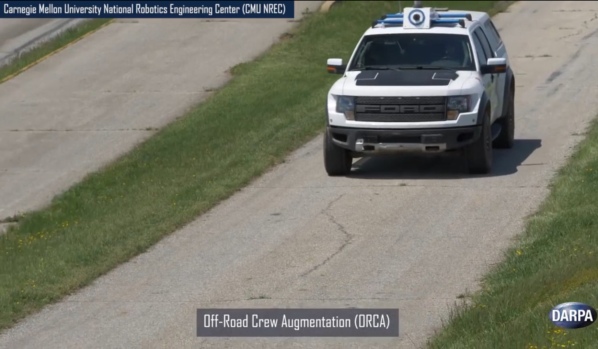

Power System for an Autonomous Truck for Crew Augmentation
 I served as an electrical engineer helping to automate a Ford Raptor Pickup truck DARPA's Ground Vehicle X program. My team's efforts were to support the NREC's efforts in the Off-Road Crew Augmentation (ORCA) project. ORCA aimed to develop software so that an off-road vehicle may assist its operators in unsafe senerios and, if warranted, drive itself autonomously.
I designed and built the power system for the ORCA project. The power system handled hundreds of DC amps across multiple rails varying from low to high voltage. Outside of my primary task for this project, I assisted in building many cable harnesses, retrofitting the vehicle with numerous sensors (Velodyne Lidar, commercial IMUs, etc.), and ruggedizing commercial computing hardware for use in an off-road environment.
Further Information
I worked on this project while I was an electrical engineer at Carnegie Mellon University's National Robotics Engineering Center. NREC is known for its close collaborations with government and industry sponsors to apply robotics technologies to different sectors. This project was depicted in a CMU press release in 2018.
Skills and Tools Used
- Schematic Design
- Altium Designer
- Cable Harness Design
- High Current Power Design
- Rugged Systems Design